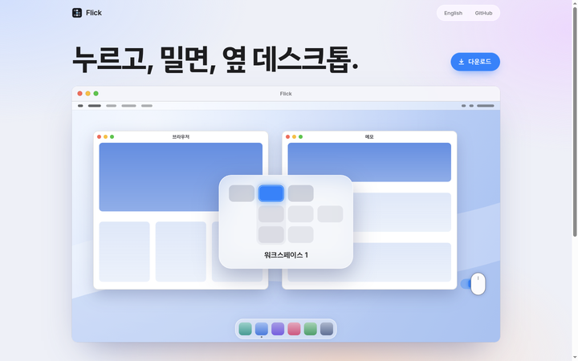
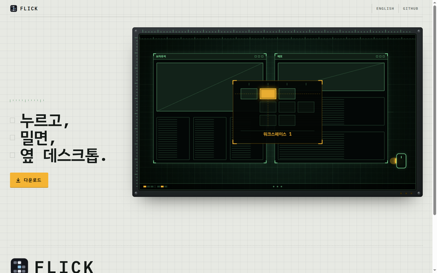
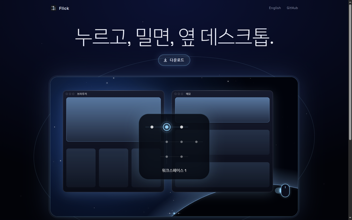
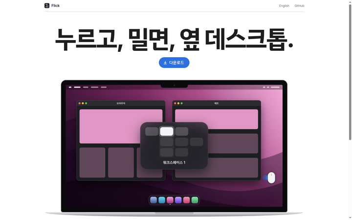

Flick 랜딩 시안
Flick 랜딩 시안
문구·링크·데모 동작은 지금 페이지와 같고, 데모 화면(바탕·창·격자 팝업·테두리)과 배치를 시안마다 새로 그렸습니다. 라이트/다크는 시스템 설정을 따릅니다(C는 둘 다 밤).

AAqua
밝은 macOS — 파스텔 배경 위 진짜 창(신호등 버튼·제목줄) 안에 메뉴 막대·Dock 있는 데스크톱, 유리 HUD 격자.
BFlight deck
항공 계기판 — 모눈종이 위 나사·눈금자 달린 금속 패널, 형광 녹색 선으로 그린 창, 호박색 계기형 격자와 문구를 따라 켜지는 램프.
CDeep orbit
깊은 우주(라이트·다크 모두 밤) — 별과 성운, 행성 가장자리가 보이는 둥근 창, 어두운 유리 창, 궤도 위 점으로 그린 격자.
DHardware
애플 제품 페이지 — 흰(다크는 검정) 바탕 가운데 큰 제목, 노치 있는 노트북 화면 속 선명한 다크 macOS 데스크톱.